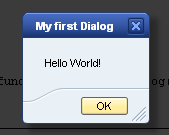

The Dialog control is used to temporarily display some information in a size-limited window in front of the regular application screen, without removing or modifying the currently displayed content in the main window. Dialog combines concepts known from other technologies where the windows have names such as dialog box,
dialog window, popup, popup window, alert box, or message box. The Dialog control is modal that means that some user action is required before returning to the parent window is possible.
You create an instance of the Dialog control using its new sap.ui.commons.Dialog() constructor. Next, you set the properties for the title and the content, make settings for the size and define other property values.
RECOMMENDATION: Do not define a Dialog as content (or part) of a view.
To use a Dialog with a view, create the Dialog and its content separately or use Fragments. Examples can be found below.
The content of a Dialog can be defined through a view but the Dialog itself can't. But with using Fragments it's possible to define a dialog via an XML-fragment that looks like a definition of an XML-view. Please
see the documentation in the Developer-Guide/Fragments.
For details please see API documentation
The Dialog buttons are regular buttons where you can register for the press event and act accordingly.
The Dialog has an aggregation for the buttons to be displayed at the bottom.
You add the buttons to the Dialog using the .addButton(...) method.
You can create one or more buttons for one Dialog.
To make the Dialog appear, the .open() method is called; this method immediately returns the control flow. This means that the next instruction is executed while the Dialog is still opened.
When one of the buttons closes the Dialog, the event handler calls the .close() method.
Additionally, there is the X-like close button in the header of the Dialog which also closes the Dialog window (.showCloseButton()).
You can react on this case using the closed event which is invoked whenever the Dialog is closed.
On button click, a Dialog window containing a label and a button is opened. Clicking the OK button (or alternatively X), the dialog is closed. Try out features like drag and drop of the dialog window, or resizing it by dragging the corner at the bottom on the right-hand side (visual marker available).
The Dialog looks as following at runtime, used theme here is the UX theme:
This example demonstrates the usage of two dialogs.
It is possible to navigate through the Dialog items step by step using the Tab key.
The Space and Enter keys can be used to activate or change the status of a selected control inside the Dialog.
Escape closes the current dialog. The Dialog control supports ARIA.